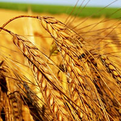
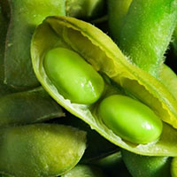
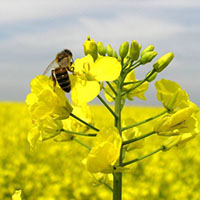
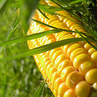
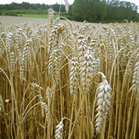
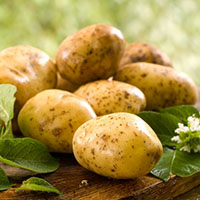
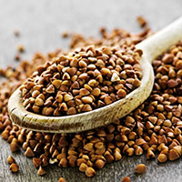

Продукція

Пшениця

Соя

Ріпак

Овес

Кукурудза

Ячмінь

Боби кормові

Картопля

рік заснування
гектарів землi
с/г культур
сушіння
зберігання
В 1991 році було засновано господарство “Повернення” , як приватне підприємство сімейного типу з площею оброблюваної землі 7 га.
На 2016 рік фірма обробляє більше 600 га.
Маємо повний асортимент техніки для забезпечення технології вирощування, передпродажної підготовки, зберігання зернових, зернобобових і овочевих культур. Підприємство має у своєму розпорядженні овочесховище, зерносховище, техніку для очистки і сушки зерна.
Ми постійно оновлюємо грунтообробну і зернозбиральну техніку відповідно до впровадження нових технологій вирощування сільськогосподарських культур.
Практично вся матеріально-технічна база виготовлена або модернізована власноруч на підприємстві. Вже більше 24 років працюємо і стабільно розвиваємось за допомогою власних сил і потужностей без кредитів та інвестицій.
Будемо раді поділитись нашим досвідом!
СЕО та голова компанії
На першій фотографії – син колгоспного токаря на саморобному міні тракторі. На іншій – син фермера, який обробляє всю землю того ж колгоспу, біля саморобного оприскувача, який не поступається європейським аналогам. На двох світлинах одна і та ж людина — Шакало Ярослав Ярославович. який обробляє всю землю того ж колгоспу, біля саморобного оприскувача, який не поступається європейським аналогам. На двох світлинах одна і та ж людина — Шакало Ярослав Ярославович.який обробляє всю землю того ж колгоспу, біля саморобного оприскувача, який не поступається європейським аналогам. На двох світлинах одна і та ж людина — Шакало Ярослав Ярославович.
04.03.2016 читати даліНа першій фотографії – син колгоспного токаря на саморобному міні тракторі. На іншій – син фермера, який обробляє всю землю того ж колгоспу, біля саморобного оприскувача, який не поступається європейським аналогам. На двох світлинах одна і та ж людина — Шакало Ярослав Ярославович. який обробляє всю землю того ж колгоспу, біля саморобного оприскувача, який не поступається європейським аналогам. На двох світлинах одна і та ж людина — Шакало Ярослав Ярославович.який обробляє всю землю того ж колгоспу, біля саморобного оприскувача, який не поступається європейським аналогам. На двох світлинах одна і та ж людина — Шакало Ярослав Ярославович.
04.03.2016 читати даліПерший раз я повірив владі, коли в 1992 році реформи в області почав В’ячеслав Чорновіл, після чого організував фермерське господарство. Та другий раз – після Вашої зустрічі з аграріями у Львівському державному Національному університеті, що в м. Дубляни. І перший раз хочу поділитись з високим посадовцем думками про стратегію розвитку сільського господарства на прикладі свого господарства. Думаю, що маю на це право, адже створив і розвинув підприємство до самодостатнього та перспективного в самий кризовий період без кредитів, інвестицій і додаткового бізнесу.
04.03.2016 читати даліTeлефон: +380 96 866 04 67
Fax: (03245) 68-9-59
E-mail: povernennia@gmail.com
Адреса: Львiв обл., Стрийський р-н, с.Комарiв